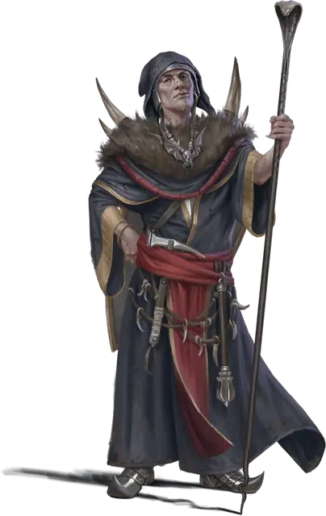

Заргаш
Zargash
Средний Гуманоид (Человек, Жрец), хаотично-злой, именной НИП

Класс Доспеха 13 (кольчужная рубаха)
Хиты 45 (7к8 + 14)
Скорость 30 футов
| мод | спас | ||
|---|---|---|---|
| СИЛ | 14 | +2 | +2 |
| ЛОВ | 10 | +0 | +0 |
| ТЕЛ | 14 | +2 | +2 |
| мод | спас | ||
|---|---|---|---|
| ИНТ | 12 | +1 | +1 |
| МДР | 16 | +3 | +5 |
| ХАР | 15 | +2 | +4 |
Навыки Обман +6, Проницательность +5
Чувства пассивное Восприятие 13
Языки Общий
Опасность 3 (700 опыта)
Бонус мастерства +2
Особенности
Особо снаряжение. Заргаш носит амулет в форме летучей мыши, который обладает свойствами кольца падения пёрышком [ring of feather falling].
Цепляйтесь за жизнь (перезаряжается после продолжительного отдыха). В первый раз, когда Заргаш опустились до нуля, её хиты вместо этого опускаются до 1.
Действия
Боевой молот. . Рукопашная атака оружием: +4 к попаданию, досягаемость 5 футов, одна цель. Попадание: 6 (1к8 + 2) дробящего урона или 7 (1к10 + 2) дробящего урона при использовании двумя руками.
Смертоносный луч. Дальнобойная атака заклинаниями: +5 к попаданию, дистанция 60 футов, одно существо. Попадание: 25 (4к10 + 3) урона некротической энергией.
Использование заклинаний. Заргаш накладывает одно из следующих заклинаний, используя Мудрость в качестве базовой характеристики (Сл спасброска от заклинаний 13):
• Неограниченно: свет [light], чудотворство [thaumaturgy];
• 1/день каждое: приказ [command], газообразная форма [gaseous form], удержание личности [hold person], тишина [silence], разговор с мёртвыми [speak with dead].
Бонусные действия
Оживление трупа (1/день). Заргаш нацеливается на безжизненный труп одного гуманоида, которого он видит в радиусе 30 футов и приказывает ему подняться, превращая его в зомби [zombie] под его контролем. Ход зомби начинается сразу после Заргаша. Оживление зомби требует концентрации Заргаша (как если бы он концентрировался на заклинании). Зомби превращается в неодушевленный труп через 10 минут, когда его хиты падают до 0 или когда концентрация Заргаша заканчивается.
Описание
Заргаш поклоняется Оркусу, Демоническому принцу Нежити, который пообещал превратить Заргаша в вампира после целой жизни верного служения. Для живого священника поклоняться Оркусу - полнейшая глупость, но Заргаш извращён без всякой надежды на искупление. Его хобби включает в себя убийство живых и оживление мертвых.